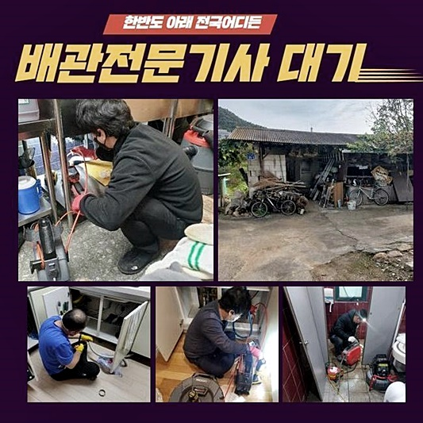
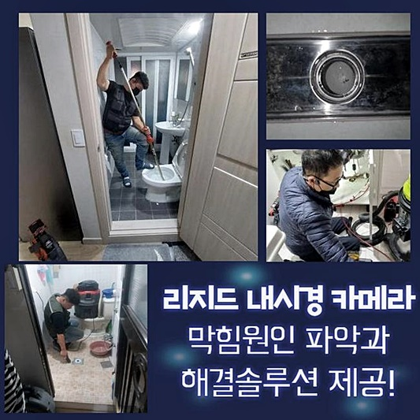
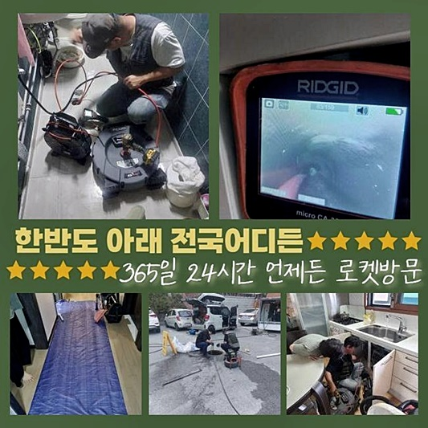
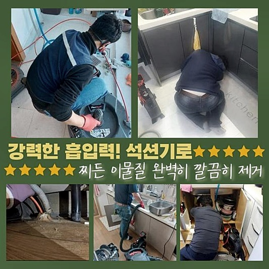
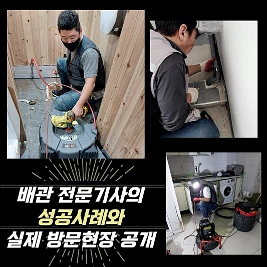
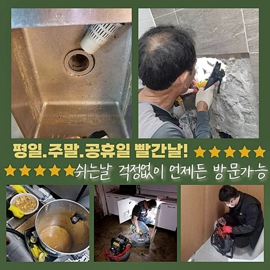

🏠 월곶동싱크대배수구역류 대야동 하수구뚫는곳 설비업체
용인 싱크대막힘 전문 시공 후기

📋 작업 개요
- 위치: 용인
- 서비스 유형: 싱크대막힘, 하수구막힘, 배관막힘, 누수수리, 역류해결, 뚫는업체, 배관청소, 고압세척, 설비공사, 배관보수, 악취차단
- 작업 일시: 2024. 6. 27. 17:39
- 업체명: 하수구수사대 (010-5615-2118)
🔍 문제 상황
월곶동싱크대배수구역류 대야동 하수구뚫는곳 설비업체
가정 내의 배수구가 고장나는 까닭은 상당히 여러가지인데 다용도실 등에서 역류증세가 나타나기도 하고 화장실에서의 생활이 알맞게 실시되지 않아서 고생을 하는 예도 꽤 많죠
해당 증세는 파이프에 들어가면 문제가 생기는 이물들이 들어갔거나 일회용 소모품들을 위시하여 각종 생활쓰레기들이 연속적으로 누가되어 발현될 여지도 많으나 건축하는 과정에서의 탈에 의하여 일어나는 지점도 꽤 있어요
금일은 구축아파트에서 일찌감치 배관공사를 실행하던 가운데 급한 문의가 들어왔답니다
세대 내부의 배수관에 종합적으로 문제가 생겨 역류증상이 도처에서 일시에 발생된다는 소식을 접하고 때마침 다음 계획이 안 잡힌 상황이라서 바로 이동하게 되었네요
세대 내부에 매립된 하수관에서 발현된 사태가 아닌 메인 배관에서 생긴 트러블은 고압물분사를 사용한 이물소쇄가 효율적인 수습 대안이라 할 수 있답니다
그렇기에 이러한 구조물을 알맞게 소제하는데 딱 맞는 세척공구를 구비한 뒤 방문하게 되었습니다
우리팀처럼 알맞은 장비류들을 준비하지 못한 사람들은 고객님의 댁에 방문하여 갈팡질팡할 가능성이 크고 뚫음이 온전하게 나타나지 않을 수 있어요
석션기를 돌리거나 분쇄용 샤프트기기로만 사태를 잠재우려하면 세대 내부에서 나온 배수관과는 상이하게 배수관의 둘레가 굵어서 뚫음이 쉽지 않게 되죠

🔎 원인 분석
💡 전문가 진단: 정밀 진단 장비를 사용하여 슬러지의 고착 여부를 판명하고 타격/세척 작업을 실시했습니다.
표출되는 부분에 대한 찌꺼기만 없앤다면 며칠간 물줄기가 보일 수는 있겠지만 시간의 흐름에 의해 배수가 안되어 버리는 일이 나와 괴로워지기에 해당되는 막힘을 처치하려고 기술자를 알아보실 때엔 여러 가지의 기기들을 가지고 있는 팀과 거래하실 것을 추천해 드립니다
의뢰지에 도착하여서 우선하여 기계실로 가서 주 하수관에 무슨 사정이 생긴 건지 따져보기로 마음먹었죠
누가된 침전물들에 연유한 상황일 여지도 존재하지만 시멘트 조각들이 배수구를 차단하여 잠정적으로 보인 모양새일 가능성도 있기에 여러 변인을 생각해두고 추후 시공을 생각해야 합니다
세밀하게 배관의 안쪽을 파악하기 위해선 배관카메라가 준비되어야 합니다
저희팀은 이러한 사태에 대한 지식이 풍족하기에 이러한 구조적인 모습에서 발발할 수 있는 문제점들을 탐색할 수 있는 값비싼 기계들과 고난이도의 시공에서 체득한 기술력이 있으므로 어떠한 이물들이라도 재빠르게 분석해서 낙착될 수 있게끔 십전 준비를 마친 상태로 출동하여 장애를 해결해 드립니다
차단이 심각한 곳은 어디인지 자세하게 내시경cctv로 진단하면서 시공을 속행했어요
촬영되는 모습을 바라보니 공용 배관 안쪽은 다양한 침전물들과 유분덩어리들로 막혀버려서 물흐름이 어려웠어요
집에서 자주 쓰는 계면활성제 베이스의 소모품과 같은 상품에 포함된 인자들과 찌꺼기들 거기에 더해 식기 세척과정에서 발생된 각종 덩어리 등 수십가지 형질의 물체들이 엉겨붙어 수분이 빠지게 되면 추후 쇳덩이와 같은 억센 소석회성분으로 변모할 수가 있답니다
이걸 곧바로 세정하지 않은 상태로 내팽개쳐 버린다면 점차 크기가 증가하게 되며 물흐름을 방해하여 공유 배관에 말썽이 생기게 되는거죠

🔧 작업 과정
지난 달에 방문했던 건축물에선 반려묘가 대소변 처리를 하는 가루모래를 한 집에서 배관으로 버리는 일로 비등한 장애가 목도되기도 했고 타입은 이처럼 내방장소마다 상이하게 드러납니다
정체가 고약한 지점의 관을 분리시킨 다음에 세정업무를 해나가면 내부에 고였던 물과 노폐물이 바깥쪽으로 분출될 수 있어서 근처가 더러워질 여지가 있으므로 우선적으로 보호비닐로 감싸야 합니다
주변 보존을 세심하게 이행하고 불결한 파이프 내측의 찌꺼기들을 처리할 예비활동을 마쳤답니다
파이프의 사이즈가 긴 축에 속하여 중반부에서도 뚫음이 시행되어야 했기에 탐지 설비를 이용해서 어느 부위까지 범위를 세팅해야 좋을지 결단을 내리게 되었습니다
그 부분도 섬세히 커버링을 이행해서 혹여라도 바깥으로 이물질이 토출되는 변수를 대처했습니다
옆부분에 구멍을 뚫어서 장비가 들어갈 수 있는 작은 크기의 영역도 준비했습니다
출발점에서부터 중앙 부위까지 쌍방에서 쇄소를 이행하는 일을 감행하여 안쪽에 고착화된 상당수의 이물들을 소멸시켰어요
고압청소 과정에서는 관벽에 눌어붙었던 노폐물들이 지속적으로 분리되어가는 모양새가 직시되었어요
해당 기기의 경우에 강한 동력으로 말미암아 필수자재로 취급하고 있어 안쪽에 붙은 침전물을 사라지도록 하는 것은 어렵지 않았어요
일거에 총체적인 파이프 노폐물을 사라지게 하는 건 까다롭기에 경중을 따진 후 계획을 세워 배관카메라를 이용하여 이물이 고착화된 처소를 세심하게 관찰한 이후에 집중적인 고압물청소 모드를 작동해 깔끔하게 만들었답니다
정말 강력하게 굳어진 잔재들은 전용 희석제품을 주입하는 현장도 있지만 이번에 간 곳은 제품 사용을 안하고도 원활하게 해결이 되었어요
작업을 끝낸 뒤 내시경cctv를 삽입해 청결히 하수구 소제가 실시되었는지 조사했고 단박에 많은 양의 수돗물을 내리는 검열 또한 시행했습니다
저희들이 처치한 지점에선 도처에서 누수 때가 탐지됐는데 유난히 배관 근처에 거무튀튀한 누기가 침투한 모양새가 목도되었어요
전반적인 구조를 진단해보니 한 부분의 배관이 노후화되어 찢겨 있어서 PB 배관으로 보강할 필요성이 있었지만 영조물의 전반에 걸쳐 배관 막힘이 발생해 처치량이 상당하였기에 이 부분을 수습하는 것에 일정 대부분이 소비되었고 시공 허가 시간이 초과되어 누수 공사는 이튿날 들어와서 마무리짓기로 약속한 뒤 돌아가게 되었답니다


✅ 작업 완료
해당 건물은 관리실 담당자에게 저층 세대 구성원들이 한꺼번에 배관 정체가 일어났다는 기별이 들어와 꽤 이른시기에 심각함을 인식하고 우리들에게 의뢰하셨기에 쉬이 해결을 보실 수 있었지요
이유 파악이 힘든 배관 막힘이나 역류로 인하여 불편을 겪고 있으시다면 배관 전문가에게 의뢰하여 극복해나가실 것을 권장합니다
우리들은 조속한 내방이 기본 개념으로 탑재되어 있으며 진솔하게 내역을 공개하여 드리니 우려하지 않아도 됩니다
걱정은 내려놓고 보수요청을 해주시면 전력으로 일하여 흡족한 성과로 회답해 드리겠습니다



⚠️ 베란다 누수 및 방수 관리 방법
- ✅ 비가 많이 올 때 창틀 주변이나 아래층 천장에 얼룩이 생기는지 정기적으로 확인해 보세요.
- ✅ 우수관 주변 실리콘 마감이 들뜨거나 깨진 틈새가 있는지 손상 여부를 수시로 체크하세요.
- ✅ 베란다 바닥 타일의 줄눈(메지)이 소실되면 그 틈으로 물이 침투하여 누수가 유발됩니다.
- ✅ 누수 의심 증상 발견 시 방치하면 아래층 손실이 커지므로 즉시 전문가의 진단을 받으십시오.
💡 핵심 정리
- 확실한 장비 작업(내시경 점검 및 샤프트 스케일링)으로 원인을 뿌리 뽑습니다.
- 작업 후 1년 이내에 동일한 부위 재발 시 100% 무상 A/S 서비스를 보장합니다.
- 서울 · 경기 · 인천 전 지역에 24시간 언제든 긴급 출동할 수 있도록 항시 대기 중입니다.
❓ 자주 묻는 질문 (FAQ)
🚨 용인 싱크대막힘 문제로 고민이신가요?
정확한 원인 진단과 확실한 시공으로 재발 없는 해결을 약속드립니다.
24시간 긴급 출동 | 서울 · 경기 · 인천 전지역 | 1년 내 재발 시 무상 A/S